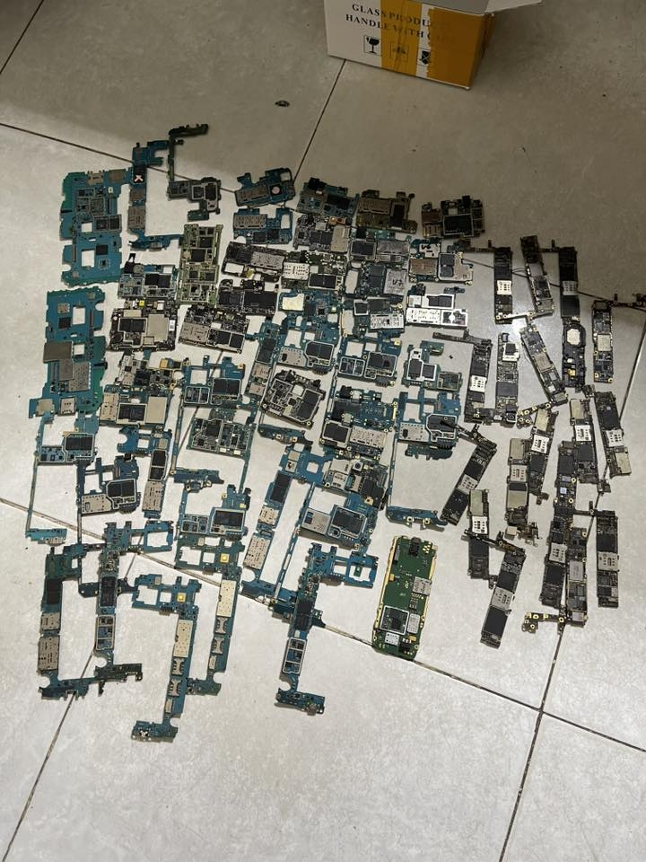
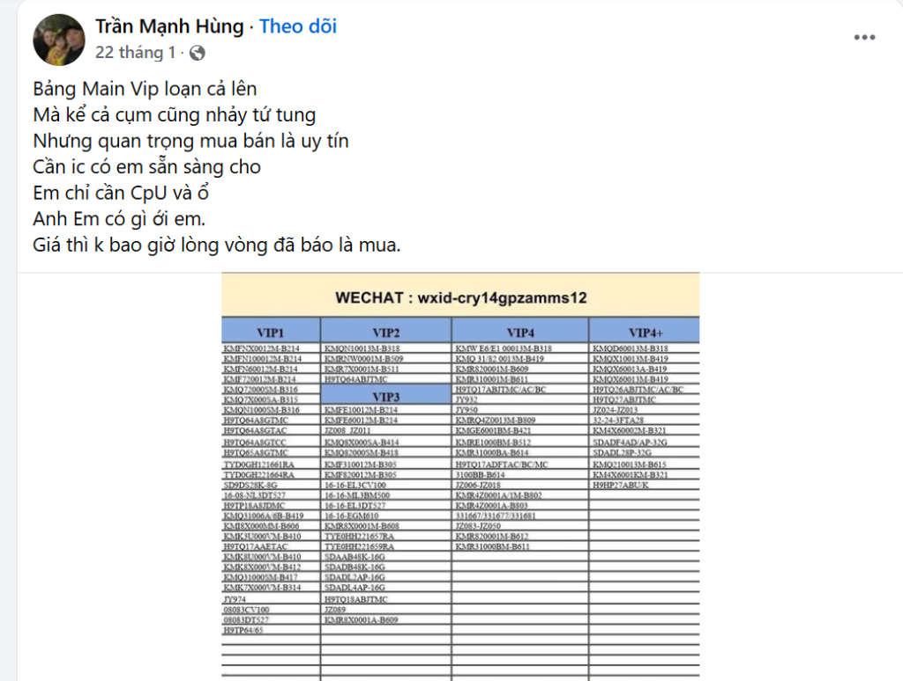
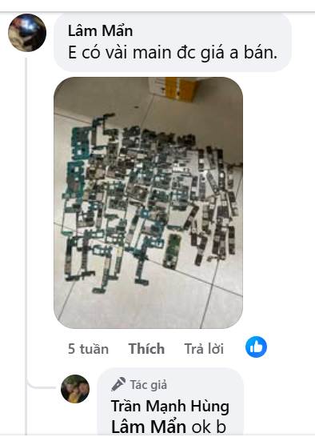
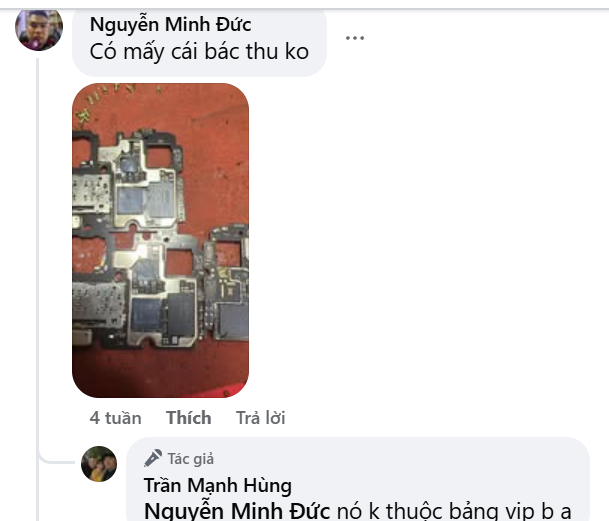
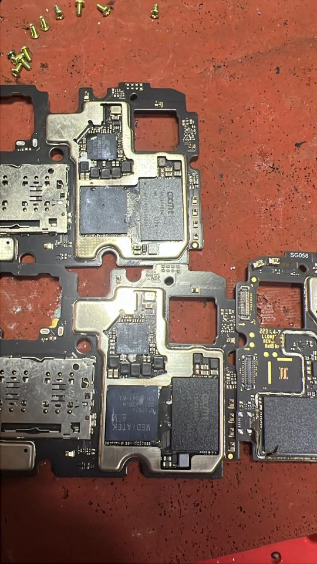

The Goldmine on the Floor

It started with a random post on a Vietnamese mobile repair Facebook group.
I was mindlessly scrolling when an update from a user named Tran Manh Hung caught my eye. It wasn't a standard ad for phone screen replacements or battery swaps. Instead, it read like a cryptic call to arms for scavengers:
"The VIP Main board market is crazy right now... But the important thing in trading is reputation. I only need CPU and storage. Brothers, if you have anything, call me. Price is never beat around the bush, once quoted, I buy."
Attached to his post was a bizarre spreadsheet, topped with a WeChat ID
(wxid-cry14gpzamms12) and filled with thousands of alphanumeric codes, like
KMFNX0012M-B214, meticulously categorized into columns labeled "VIP1" through "VIP10."

I opened the comment section, expecting someone to ask what the chart meant, but the people replying already knew exactly what game they were playing. It was a surreal, underground auction for literal garbage.
A user named Lam Man chimed in, posting a photo of a massive, tangled pile of stripped green smartphone motherboards scattered across a tiled floor. "I have a few mains, if the price is good I'll sell," he wrote. The buyer quickly agreed.

Right below that, another user named Nguyen Minh Duc posted a close-up photo of a busted motherboard, asking if the buyer would take it. The buyer took one look at the square black microchips soldered to the board and shut him down: "It doesn't belong to the VIP chart, brother."

Why were people paying top dollar in straight cash for completely destroyed circuit boards? And more importantly, what made one broken piece of trash "VIP" while another was rejected? I had to dig deeper.
The Anatomy of Trash: Why Was the Board Rejected?
To understand the VIP market, I first had to understand what made Duc's board worthless. I zoomed in on the high-resolution photo of the rejected motherboard to see exactly what Tran Manh Hung saw.
There were only two major microchips on the stripped board:
- The Processor: A chip clearly labeled MediaTek MT6761V. This is the Helio A22, an ultra-budget processor launched back in 2018 for entry-level phones.
- The Memory: Right next to it was a chip labeled CXMT (ChangXin Memory Technologies).

Because a smartphone requires both system memory (RAM) and flash storage (ROM), and there was no third chip on the board, it meant this CXMT chip was an eMCP (Embedded Multi-Chip Package). The RAM and storage were combined into a single piece of black resin.
It was exactly the type of "storage" the buyer was looking for, yet he rejected it. This chip failed on three fronts:
First, the specs were abysmal. Paired with a low-end 2018 processor, that CXMT chip likely only held 16GB of slow eMMC storage. In today's secondary market, 16GB is virtually worthless.
Second is the "Programmer Problem." Before a recycled chip can be resold, a sweatshop technician must place it into a specialized pirate testing machine (like an Easy-Jtag box) to wipe the previous owner's data. These wiping tools are heavily optimized to read the proprietary firmware of Tier-1 legacy brands like Samsung or SK Hynix. An off-brand or domestic eMCP might not format with a simple click. If it's a labor bottleneck, it's trash.
Finally, there is zero factory demand. The factories buying these recycled chips want guaranteed reliability to avoid "bricking" their cheap gadgets on the assembly line. If it's not a premium, recognized brand, buyers won't pay for it.
Cracking the Code: What is a "VIP" Chip?
If the CXMT chip was garbage, what was on the VIP chart? To the untrained eye, the chart looks like a catastrophic Excel error. But in reality, it is a daily commodities index for top-tier dead silicon.
The long strings of text on the spreadsheet are exact manufacturer part numbers for Samsung (codes starting with "KM") and SK Hynix (codes starting with "H9") memory chips. Because there are thousands of different smartphone models, scrap buyers use this standardized "VIP" tier system to appraise trash at a glance:
- The Bottom Tiers (VIP 1 to VIP 3): These are older, low-capacity chips, usually 8GB or 16GB of storage paired with maybe 1GB of RAM. They fetch a few dollars at most.
- The Middle Tiers (VIP 4 to VIP 7): Here we find the 32GB and 64GB chips. These were the standard in flagship phones half a decade ago and are still highly sought after.
- The Top Tiers (VIP 8 to VIP 10): This is the premium silicon. These chips boast capacities of 128GB, 256GB, and higher, utilizing high-speed UFS technology. If a repair guy pulls a VIP 10 chip from a dead phone, he can easily sell it for upwards of a million Vietnamese Dong ($40 USD) in cold, hard cash.
To the untrained eye, Duc's rejected board and Lam Man's massive pile of accepted boards looked like the exact same pile of green trash. But to the gray-market appraiser, a Samsung chip is a highly liquid asset, while that CXMT chip is just a useless chunk of fiberglass. If it's not on the VIP chart, it simply doesn't exist.
The Global Pipeline: From Hanoi to Shenzhen
When local repair technicians in Vietnam accumulate a pile of these accepted "VIP" motherboards, they sell them to regional aggregators like the author of the Facebook post.
These aggregators act as middlemen. They bundle tens of thousands of these boards and ship them
across the border to wholesale recycling hubs in Huaqiangbei, Shenzhen. This is where the mysterious
WeChat ID at the top of the chart comes into play. Middlemen message IDs like
wxid-cry14gpzamms12 to lock in bulk commodity prices before the global market
fluctuates.
Once the dead motherboards arrive in Shenzhen sweatshops, workers meticulously melt the solder and pluck the memory chips right off the boards. The residual solder is scraped clean.
Technicians completely format the chips, wiping away the original owner's private photos, banking apps, and text messages, and verify that the silicon is still healthy. The chips are then thrown into literal VIP bins, ready to be resold on wholesale platforms like Alibaba.
Reincarnation: Where Do Your Old Chips Go?
Tech giants like Apple and Samsung do not buy these recycled components. The primary buyers are the thousands of "white-label" OEM factories in China that produce generic, budget electronics.
- Cheap Android TV Boxes: If you buy a generic $20 Android TV box off Amazon or AliExpress, it is almost certainly powered by a recycled VIP 5 or VIP 6 smartphone chip. Factories buy bulk bins of whatever mid-tier chips are cheapest that week. This is why two identical-looking TV boxes bought from the exact same link will often have completely different internal hardware.
- Generic USB Drives: The lowest-tier chips (VIP 1 to VIP 4) are too small to run modern operating systems, so they are soldered into cheap promotional USB flash drives or novelty SD cards. Researchers have bought cheap USB drives online and found old Android system folders, WhatsApp data, and private photos hidden deep on the drives, proving the factories had used recycled phone chips and failed to wipe them properly.
- Huaqiangbei Counterfeits: The mid-tier chips (VIP 5 and VIP 6) are the workhorses of the Huaqiangbei counterfeit market. When a factory builds a "fake" high-end smartphone, they don't use expensive, high-performance spare parts. Instead, they take a recycled 32GB or 64GB chip from this chart and solder it into a casing that looks like a brand-new iPhone or flagship Galaxy. They then use software tricks to make the phone report that it has 512GB of space, when in reality, it's just a recycled chip from someone's discarded 2017 smartphone.
What started as a confusing Facebook comment thread led me to a profound realization about our digital footprint. While the tech industry is notorious for producing millions of tons of e-waste annually, this underground gray market proves that the circular economy is shockingly efficient.
That massive pile of broken green boards sitting on a tiled floor wasn't garbage. It was a goldmine. Long after your phone is shattered and forgotten, its memory refuses to die, reincarnated as a smart TV box in Brazil, a promotional flash drive in Europe, or the deceptive heart of a counterfeit phone right back here in Vietnam.